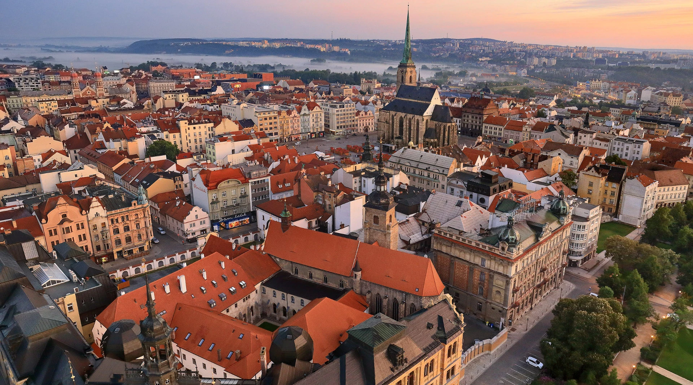
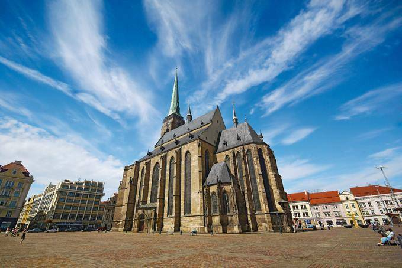
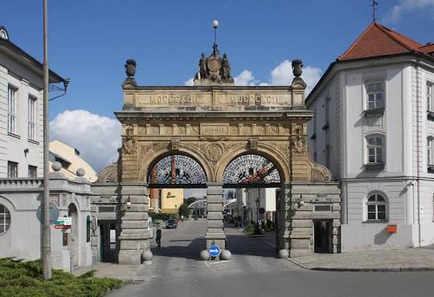
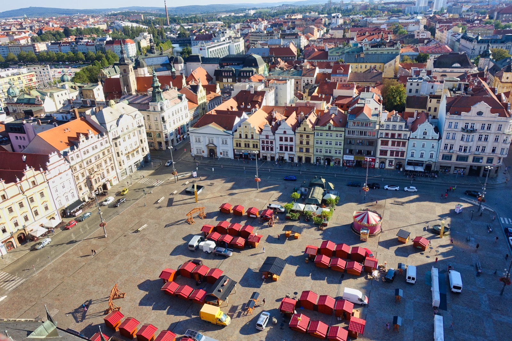

Discover the birthplace of Pilsner Beer, impressive Gothic architecture and the rich history of western Czechia.
Pilsen is a historic city in western Czechia, known around the world for its beer-making tradition. The city is the birthplace of Pilsner lager, which was first brewed here in 1842.
Beyond its brewing heritage, Pilsen offers beautiful architecture, lively squares and a rich cultural scene. Its historic centre is dominated by St. Bartholomew's Cathedral, whose tall tower is one of the city's most recognizable landmarks.
Plzeň Region
Czechia
Pilsner beer and history
Western Czechia
St. Bartholomew's Cathedral stands in the centre of Pilsen's main square. Construction began in the late 13th century, and the cathedral has become one of the city's most recognizable landmarks.
Its tall tower offers impressive views of Pilsen and the surrounding region. Visitor can admire the Gothic architecture and explore the historic interior of this important religious monument.

Pilsner Urquell Brewery is one of the most famous landmarks in Pilsen. The brewery produced its first batch of Pilsner lager in 1842, helping create a beer style that later became popular around the world.
Visitors can learn about the brewing process, explore the brewery's historic cellars and discover the story behind the city's most famous drink. The brewery is an important part of Pilsen's identity and heritage.

Republic Square is the main square in the historic centre of Pilsen. It is surrounded by historic buildings, cafés and shops, creating a lively place for visitors to explore.
The square is home to St. Bartholomew's Cathedral and hosts markets, festivals and other public events throughout the year. It is an ideal starting point for discovering Pilsen's history and architecture.

Approx. 186,000 residents
Approx. 138 km²
1295
Pilsner lager first brewed in 1842